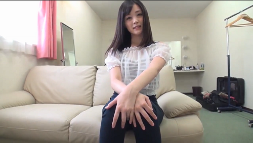

Phần 1
Hắn vừa giơ những tấm phim âm bản lên ngắm nghía vừa huýt sáo, đã lâu lắm rồi hắn mới chụp những bức ảnh đẹp đến thế. Lâu nay chỉ toàn chụp hình mấy cô ả người mẫu diễn viên, đến giờ hắn mới cho mình được nghỉ ngơi mấy ngày ra Mũi Né chụp cảnh biển. Căn phòng tráng phim chỉ có ánh sáng hồng mờ mờ, hắn kẹp từng tấm ảnh vừa tráng lên dây. Hắn vuốt cằm ngắm một bức chụp cảnh biển lúc bình minh, mặt trời đang nhô lên trên biển xanh biếc, đỏ ối, sáng tinh khôi chớ không chói loá. Đây là bức hắn thấy tâm đắc nhất lần này, có lẽ đến cuối năm hắn sẽ vác đi triển lãm.
Từ hồi vào cái nghề nhiếp ảnh này, chụp phong cảnh vốn là sở trường của hắn, nhưng khốn nạn là hắn không sống nhờ được vào cái nghề này nếu chỉ chụp cảnh hoa lá, trăng sao thế này. Hắn phải vác máy chụp cho mấy hãng thời trang, quảng cáo các loại quần áo dày dép, mỹ phẩm, để kiếm cơm, mà cũng là để nuôi cái thú chụp phong cảnh nghệ thuật của gã.
Nhưng thực ra thì cái nghề chụp ảnh đàn bà này cũng không đến nỗi bạc bẽo đến vậy, cũng nhờ nó mà hắn có không ít dịp chơi tẹt lồn mấy cô nàng người mẫu nõn nà mỗi lần chụp hình họ. Cái khoản này cũng đa dạng lắm. Có cô bé mới chập chững bước lên sàn catwalk, muốn tự nâng giá mình nên tới nhờ hắn chụp cho những tấm hình thiệt chuẩn để đem đến giới thiệu cho mấy hãng thời trang. Tiền công hắn lấy mấy em này phải chăng thôi, có điều muốn đẹp, muốn khi lên hình cái xấu được giấu hết đi, cái đẹp phô bày ra nhiều hơn thì mời em trước khi chụp cởi truồng ra cho hắn địt mấy phát lấy cảm hứng trước khi chụp hình. Coi như đôi bên cùng có lợi, vả lại mấy em người mẫu này thì cũng đã và sẽ cho hàng tá thằng cưỡi lên bụng mình rồi, chìu hắn để cho hắn có hứng “làm nghệ thuật” cũng OK thôi.

Cũng có cả những cô người mẫu đã nổi tiếng và đắt giá cảm phục cái tài nghệ chụp hình của hắn nên cho hắn chơi mình miễn phí, các nàng có mất gì đâu, vừa được sướng cong người với cái buồi to như cái chày giã cua của hắn lại vừa kết thân được với hắn, về sau thể nào chả có việc nhờ vả đến. Thế nên dù cũng không khoái chụp mấy cô nàng đứng làm dáng uốn éo này, nhưng vì tiền, và cả vì lồn đàn bà nữa mà hắn chẳng thể nào dứt ra được, coi như là cái nghiệp đời hắn rồi.
– Mà sao chưa thấy cái hãng đồ lót V gởi tiền nhuận bút ảnh vầy kìa, đụ má, ảnh thì đã cầm cả tuần mà vẫn chưa nghiệm thu rồi trả tiền cho người ta. – Hắn châm điếu thuốc phì phèo, khói thuốc hắn phả ra thành những vòng tròn nho nhỏ rất điệu nghệ. – Lần sau thì đố chúng mày mời được ông chụp cho nữa.
Vốn dĩ bản tánh hắn ghét nhất là chuyện chậm trễ tiền nong, công sức hắn bỏ ra, chất xám bỏ ra chớ có phải là rác rến đâu. Mà mấy ngày hôm nay đi ra biển chỉ chuyên tâm đi tìm cảnh đẹp để chụp, hắn chưa được xả van. Hắn thấy cái buồi mình tưng tức, bây giờ cần thì lại chả có con nhỏ nào cả, bực thiệt.
Nghĩ đến cảnh hôm nọ chụp hình quảng cáo đồ lót là cái của nợ ấy của hắn lại dựng đứng hết cả lên. Vì là chụp trong studio riêng, hơn nữa ngoài mấy cô nàng người mẫu cũng chỉ còn lại mấy con mụ nhân viên hãng đồ lót, có mỗi hắn là đàn ông nên mấy cô nàng cứ thản nhiên thay quần áo trước mắt hắn. May là hắn có kinh nghiệm rồi chứ không thì chắc cũng tức nổ buồi ra mà chết với mấy nàng. Vốn dĩ khi lên hình các nàng cũng đã tơ hơ hết cả ra với chỉ mấy miếng vải bé xíu mỏng dính trên người. Thế mà chụp xong một kiểu các nàng lại rủ nhau cởi ra hết trơn để mặc kiểu khác vào chụp tiếp cho lẹ, cứ như trêu ngươi hắn với mấy cái chỗ đen đen hồng hồng giữa chân các nàng. Mỗi lần nghĩ đến là mỗi lần hắn thèm đến chảy cả dãi dớt ra miệng, lúc đó mà không có mấy con mụ nhân viên đứng kèm thì có lẽ hắn đã lôi cả đám người mẫu đó ra bắt đứng sắp hàng cho hắn địt lần lượt từng đứa một rồi. Mấy con nhỏ lồn ra lồn, vú ra vú, nhìn vừa xinh vừa ngon. Mà như lúc này thì hắn cũng chả cần phải thiệt ngon thiệt xinh, cứ là đàn bà, cứ có một cái lỗ cho hắn đút cặc vào là được rồi. Đang định nhấc phone để gọi cho mấy em mới vào nghề đến làm tình với hắn thì hắn nghe thấy tiếng gọi từ dưới lầu
– Anh ơi, có nhà hông, em Hoà nè.
Hắn choàng tỉnh, bàn tay đang luồn vào trong quần vuốt cặc vội bỏ ra, hắn trả lời, giọng khàn đặc
– Hoà à em, anh ở trên lầu trong phòng tráng nè em. Cứ lên đây đi.
Tiếng guốc cao gót nện từng nhát trên cái cầu thang gỗ lộp cộp. Đang lúc cần lồn lại tự dưng có em dẫn xác đến nhưng hắn cũng chẳng vui vẻ ra là bao. Giá như là Linh, hoặc Uyên, hoặc Xuân hoặc là một con nhỏ mới vào nghề ngoan ngoãn nào đó thì còn tốt hơn cái con nhỏ Bảo Hoà này. Mấy em kia thì chỉ cần hắn nháy mắt một phát là đã hiểu ngay hắn đang cần làm tình, là quỳ ngay xuống vạch quần hắn, moi con cặc của hắn ra mà thổi, mà mút say mê. Đằng này lại là cái con nhỏ Bảo Hoà, hắn chẳng có thiện cảm mấy với cái vẻ kênh kiệu trên đời của nó. Hắn biết cô nàng đang là người mẫu đắt giá nhất, mới vào nghề làm mẫu chưa lâu nhưng đã leo vùn vụt. Cũng đúng thôi, với một thân hình như thế, bộ ngực lúc nào cũng phập phồng như núi lửa cộng với khuôn mặt ưa nhìn và khá “Tây”, ở Việt Nam cũng không kiếm nổi một cô nàng Bảo Hoà thứ hai lúc này.
– Em chờ anh ngoài này nghen.
– Không cần đâu, anh xong rồi, em cứ vào đây cũng được.
Hắn với tay bật công tắc, căn phòng sáng lên đôi chút, vẫn là ánh sáng hồng hồng nhưng vì bóng đèn có công suất lớn hơn, thành thử mọi thứ sáng và dễ nhìn hơn.
– Trời ơi, nhiếp ảnh gia đam mê sáng tác quá hen, cớ gì mà người ta điện thoại tìm cả buổi mà máy cứ tắt sóng hoài.
– Hôm nay người đẹp đến tận nơi tìm, hân hạnh quá.
Hắn gần như sững người khi bắt gặp trọn vẹn thân hình mỹ miều của cô nàng gói trọn trong cặp mắt ti hí của hắn. Cái áo chẽn bó sát người như hãnh diện khoe khoang những đường cong nơi ngực, nơi eo. Con mắt nhà nghề của hắn biết thừa ở bên dưới lớp vải mỏng đang nhô cao ấy là hai trái bưởi trắng nõn mà mười thằng đàn ông thì cả mười đều ước một lần đặt miệng vào đó mà nút. Cặp giò dài được bò khuôn trong cái quần jeans cạp trễ, mỗi lần nàng hơi cử động là cái lỗ rốn xinh xinh lại ẩn hiện như trêu ngươi. Cái kiểu này cahr khác chi đổ thêm dầu vào lửa, bú thêm con cặc đang nứng, phải cố lắm hắn mới kịp trấn tĩnh không nhào vô cô nàng mà đè ra sàn nhà để địt.
Lột cái bao tay bằng ni lông dính đầy hoá chất tráng rửa vào sọt rác, hắn hể hả bước lại phía cô nàng, cái bụng phễ nhún nhảy theo mỗi bước. Hắn đang trong giai đoạn nhịn ăn giảm béo, nhưng nhịn ăn hắn còn chịu nổi ,chớ nhịn địt hắn bó tay, nhất là lúc nào cũng tiếp xúc với hàng tá mĩ nữ kiểu này.
– Anh chụp cảnh biển đẹp ghê héng.
– Em thấy đẹp à, chờ khi khô hẳn nó lên thật màu thì còn đẹp nữa, anh đang định mang ra thăm dò, nếu được ủng hộ đến cuối năm sẽ mang đi nước ngoài triễn lãm. Lâu lắm anh không được chụp phong cảnh rồi, cũng thấy nhớ nghề.
– Thôi đi cha, không chụp sông chụp biển thì chụp đàn bà cởi truồng chả sướng hơn ngàn lần ấy à.
– Ai biểu em thế. Anh thề…
– Thề thốt gì, bọn con Hương, con Xuân đứa nào chẳng cởi ra cho anh chụp hết trơn. mà chúng nó cũng khoe với em rồi, nói anh chụp khoả thân là nhất ở Sài Gòn.
– Ờ, cùng thi thoảng thôi. Anh cũng chỉ chụp một hai cô thân thiết thôi chớ chụp “nuy” dễ tiêu lắm em ơi.
– Cô nào cho anh địt chán chê thì anh coi là thân thiết đúng không, em còn lạ gì mấy tay nhiếp ảnh các anh, ban ngày chụp ảnh đến đêm bắt người mẫu tụi em phục vụ hộc cả hơi.
Hắn cười hơ hớ, chẳng thừa nhậ cũng không biện bạch hay phủ nhận. Bảo Hoà tuy tuổi đời tuổi nghề chưa nhiều nhưng đến một con cáo giá như hắn cũng ngạc nhiên quá đỗi trước cái vẻ già dặn và sành sỏi của cô ả. Hắn tự nhủ cô nàng cũng không đến nỗi thiếu Iốt như mấy cô nàng đã từng lên giường với hắn. Cái vẻ ngang tàng không biết sợ của nàng cũng khiến hắn thấy thích thú, có lẽ bên dưới đống quần áo đang mặc trên người, cô nàng cũng có đủ những yếu tố cần thiết giúp cô nàng tự tin vào mình đến thế. ” Nhưng chỉ có cặp vú to và cái lồn bót chặt không thôi là chưa đủ đâu cô em ơi, đàn bà cần nhiều thứ nữa” Hắn nghĩ thầm trong lúc đẩy ly cocktail tự pha chế về phía cô nàng.
– Cô nào muốn chụp khoả thân thì anh chụp luôn ở đây à, có kín đáo không hả anh.
Cô nàng hỏi hắn bất ngờ khiến hắn ấp úng không biết trả lời ra sao, đúng là hắn đều chụp những cô người mẫu khác ở đây, trong chính cái studio riêng này của hắn, nhưng phải sau khi các nàng đã giúp hắn thoả mãn con lợn lòng. Thường một cô người mãu muốn hắn chụp nuy cho thì phải cởi hết ra cho hắn đánh giá trước, nếu ổn thì đến giai đoạn cho hắn địt thử một hai phát. Nếu hắn thấy cô nàng nước nôi đầy đủ, khéo chiều thì hắn sẽ bắt cô ả phải “đi chơi” với hắn vài hôm. Bình thường là hai ba ngày, cô nào xinh thì bị giữ làm đồ chơi cho hắn lâu hơn chút xíu, nhưng nói chung tất cả các cô đều phải qua đầy đủ các giai đoạn như thế trước khi được đứng trước ống kính của hắn.
– Em cũng muốn chụp khoả thân à….- hắn ngập ngừng – anh sợ em phải kiếm người khác chớ anh rút khỏi mấy cái vụ này rồi. Dạo này bên quản lí văn hoá làm dữ lắm, lơ mơ là tiêu luôn. Với lại..
– Với lại anh chưa được đụ em bao giờ phải không – Cô nàng cười ranh mãnh, hai tay vuốt lại cái cổ áo mở rộng, hắn đã cố soi vào chỗ hẽm nhô lên giữa hai bầu vú nàng nhưng cái cổ áo khép kín lại làm hắn thất vọng.
Hắn giật nảy người, chưa bao giờ bối rối như thế. Hắn vẫn biết cô nàng nổi danh trong giới người mẫu là vừa chảnh vừa nói năng thẳng tưng, nhưng cái kiểu thẳng thắn quá đỗi ấy của cô nàng cũng khiến hắn giật mình. Quả vậy, nhưng hắn không đủ can đảm thừa nhận mình chỉ chụp khoả thân sau khi đã được địt chán chê. Nhiều cô lúc chụp hình cởi đồ ra mới phát hiện cái lồn bị hắn chơi sưng múp cả lên, phải lấy đã chờm vào cho khỏi sưng rồi mới dám dạng chân ra cho hắn nháy lia lịa đủ mọi tư thế.
– Thôi, khỏi vòng vo, chắc anh cũng đã nghe em vốn là đứa ghét vòng vo rồi. Em đang cần độ hai chục kiểu khoả thân để đưa sang cho bên hãng Thời trang nước ngoài, bọn nó đòi phải được xem vú, xem lồn của em rồi mới chịu ký hợp đồng. Mấy con bên Elite đã gởi nhưng bị bọn bển từ chối hết. Mà tiền công cao lắm nên em không làm cũng thấy tiếc. Vì thế em đến để nhờ anh giúp em, thời gian này hình như anh cũng chưa vướng gì vậy anh chụp luôn cho em.
– ……..
Hắn chẳng biết nói gì, hắn có cảm giác đang bị con nhỏ ranh ma này xỏ mũi, cho dù thực tế, hắn có đủ mọi yếu tố để cầm đằng chuôi.
– Anh cứ nói thẳng. Mấy nhỏ bạn đã nói qua với em, bọn nó đều đã được anh chụp truồng cho hết cả rồi. Chúng nó nói mỗi lần chụp thì phải làm tình với anh, nói chung là làm vợ anh hai ba ngày gì đó. Với em không thành vấn đề, chỉ cần anh chụp thật đẹp cho em thì hai hay ba ngày, thậm chí một tuần anh địt em liên tục cũng OK. Em nghĩ là địt em anh sẽ thấy sướng hơn nhiều so với những con nhỏ khác anh từng địt.
Như để chứng minh, cô ả phanh hờ cái cổ áo ra cho hắn nhìn thấy phần trên bầu vú của cô nàng, như thể hai quả bưởi năm roi biết thở vậy, nó nhô lên nhô xuống làm hắn thấy như nghẹn cả cổ họng.
– Được rồi, vậy bao giờ em muốn chụp
– Ngay ngày mai, đừng ngạc nhiên vầy. Em biết theo lẽ thường em phải cho anh địt trong khoảng mấy ngày rồi sau đó anh mới chụp cho em. Nhưng đó là mấy con nhỏ người mẫu khác, còn anh đừng quên em là Bảo Hoà.
Cô nàng vênh mặt lên đầy tự tin, trong lúc yếu thế hơn mà vẫn chảnh như vậy chả trách gì tất cả mấy cô nàng người mẫu quen hắn kể lại đều ghét cay ghét đắng mỗi khi nhắc đến cái tên Bảo Hoà.
– Vì em là Bảo Hoà – cô nàng dừng lại một lúc – nên em chỉ cho anh địt em khi nào anh đã chụp xong xuôi cho em, và em thấy tất cả những kiểu ảnh khoả thân của mình đều đẹp, thì lúc đó, anh mới được “múc cháo”. Nhưng anh yên tâm, nếu anh chụp đẹp thì anh sẽ thấy cô người mẫu của anh đáng đồng tiền bát gạo. Thế nào, chỉ cần anh nói đồng ý hoặc không, nếu không thì em xin phép về.
Hắn suýt không kìm được nhổm lên kéo tay cô nàng ngồi lại, song hắn phát hiện ra cô nàng chỉ giả bộ xách túi ra về cho có dáng thôi, thực ra cô nàng vẫn đang ngồi chờ câu trả lời của hắn. Hắn nhìn lại một lần cô ả, cố tưởng tượng ra cảnh cô nàng ngửa ra giường dang tay kéo hắn vào lòng.
– Em là một người thương thuyết giỏi. – Hắn lắc đầu chịu thua. – Anh đồng ý sẽ chụp cho em trước, nhưng bù lại sau khi chụp xong em phải cho anh hẳn một tuần. Có lẽ anh sẽ đưa em đi ra ngoài Bắc để kết hợp chụp phong cảnh ngoài đó. Được địt em có lẽ anh sẽ càng có hứng thú sáng tác.
– OK, thảo thuận vậy, nhưng ảnh phải đẹp. – Bảo Hoà giơ ngón tay trỏ lên giao hẹn với hắn,
– Yên tâm, bà già tám mươi cởi truồng cho anh chụp thì lên hình cũng đẹp hơn gái mười tám thằng khác chụp.
– Vậy giờ này ngày mai em sẽ quay lại, nhưng anh nhớ chỉ được có anh và em, không có người thứ ba ở studio đâu đấy.
Hắn nhìn theo cặp mông đung đưa qua lại bước ra cửa, mỉm cười, rồi hắn vẽ bắt cô nàng phải quỳ chổng cái mông ngồn ngộn ấy ra đắng sau cho hắn địt, buồi hắn cương lên khủng khiếp trong quần. Hắn nhấc phone gọi một em đến giải quyết đỡ cho hắn, địt tạm một em trong lúc chờ đến ngày được cô người mẫu số một Việt Nam đích thân hầu hạ.
(Hết Phần 1 … Xin mời đón xem tiếp Phần 2 )